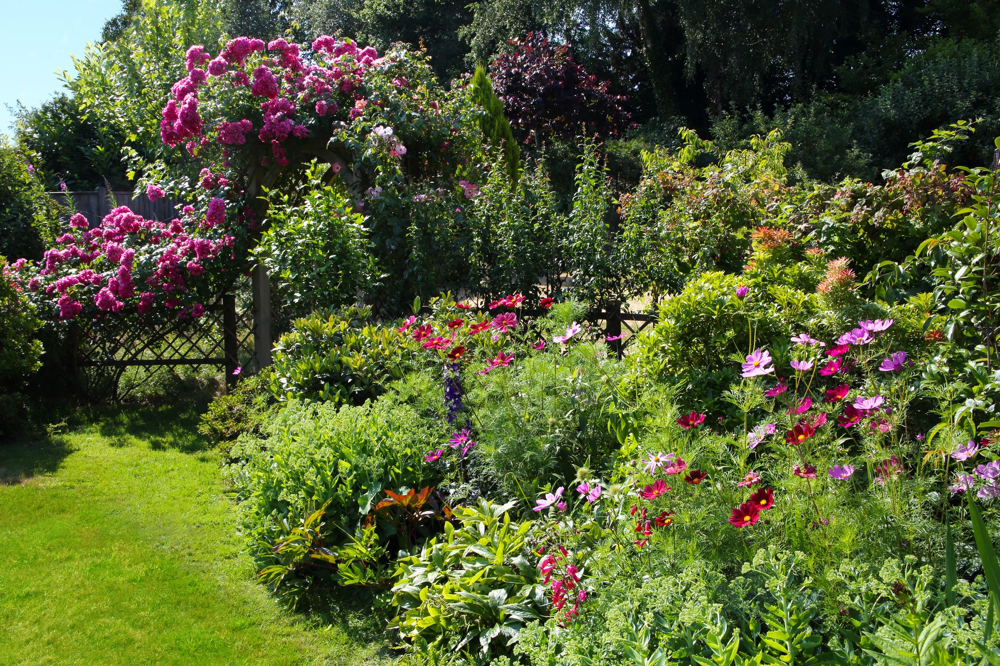

SHURBS
 Shrub roses growing under natural conditions are exposed to unfavorable environmental conditions such as high temperature and drought, particularly around the blooming stage. This can reduce the reproductive potential and aesthetic value of commercial rose cultivars, which are often more sensitive to harsh conditions. Plants adjust to adverse environments by regulating several morpho-physiological and biochemical processes, which are the key to tolerance mechanisms. Thus, to examine genetic potential of 22 roses, we characterized 18 traits: gas exchange, leaf biophysical, pigments, and pollen germination characteristics using field-grown roses at the blooming stage. A broad genetic variability (P < 0.001) in all measured traits suggests that roses comprise heat- and drought-adaptive traits. A weak correlation between the pollen viability or germination and the pollen tube length at 38 °C signifying the complexity of reproductive processes. However, three rose cultivars, Moje Hammarberg, Carefree Spirit, and Lavender Meidiland had better pollen germination-related traits (25 %) along with high photosynthetic capacity (24 %) and pigment traits (22 %) compared with sensitive cultivars. The generated phenotypic data, along with reliable phenotyping methods and identified candidate cultivars, would help develop roses with enhanced resilience to stress for dry and hotter climates.
Shrub roses growing under natural conditions are exposed to unfavorable environmental conditions such as high temperature and drought, particularly around the blooming stage. This can reduce the reproductive potential and aesthetic value of commercial rose cultivars, which are often more sensitive to harsh conditions. Plants adjust to adverse environments by regulating several morpho-physiological and biochemical processes, which are the key to tolerance mechanisms. Thus, to examine genetic potential of 22 roses, we characterized 18 traits: gas exchange, leaf biophysical, pigments, and pollen germination characteristics using field-grown roses at the blooming stage. A broad genetic variability (P < 0.001) in all measured traits suggests that roses comprise heat- and drought-adaptive traits. A weak correlation between the pollen viability or germination and the pollen tube length at 38 °C signifying the complexity of reproductive processes. However, three rose cultivars, Moje Hammarberg, Carefree Spirit, and Lavender Meidiland had better pollen germination-related traits (25 %) along with high photosynthetic capacity (24 %) and pigment traits (22 %) compared with sensitive cultivars. The generated phenotypic data, along with reliable phenotyping methods and identified candidate cultivars, would help develop roses with enhanced resilience to stress for dry and hotter climates.
 Syringa vulgarisais easily grown in average, medium moisture, well-drained soil in full sun. Tolerates light shade, but best bloom is in full sun. Intolerant of full shade. Prefers moist, fertile, organically rich, slightly acidic to slightly alkaline soils with good drainage. Avoid soggy soils. Needs good air circulation. Prune as needed immediately after flowering. To the extent practicable, promptly remove faded flower panicles before seed set. Best grown in climates with cool summers and cold winters. Not recommended for planting in hot and humid Zones 8 and up where chilling requirements are difficult to meet leading to unreliable blooming. Promptly remove root suckers, particularly on grafted plants, to maintain plant appearance and prevent unwanted colonial spread. Propagate by cuttings in spring.
Syringa vulgarisais easily grown in average, medium moisture, well-drained soil in full sun. Tolerates light shade, but best bloom is in full sun. Intolerant of full shade. Prefers moist, fertile, organically rich, slightly acidic to slightly alkaline soils with good drainage. Avoid soggy soils. Needs good air circulation. Prune as needed immediately after flowering. To the extent practicable, promptly remove faded flower panicles before seed set. Best grown in climates with cool summers and cold winters. Not recommended for planting in hot and humid Zones 8 and up where chilling requirements are difficult to meet leading to unreliable blooming. Promptly remove root suckers, particularly on grafted plants, to maintain plant appearance and prevent unwanted colonial spread. Propagate by cuttings in spring.
 Hardy hibiscusis a non-tropical plant that tolerates punishing winters as far north as USDA plant hardiness zone 4 (with protection), while tropical hibiscus won't survive outdoors north of zone 9. Tropical hibiscus is available in single or double blooms in colors that include salmon, peach, orange or yellow. hardy are hardy perennials in zones 4-9. Their large stature and dinner plate sized blossoms make them the talk of the neighborhood from midsummer to early fall as they flaunt their tropical looking blossoms. Hummingbirds and pollinating bees are attracted to the colorful flowers, but deer typically pass them by. These herbaceous perennials are hybrids of a few different North American native Hibiscus species. One of the most common parents, species Hibiscus moscheutos, is a perennial hibiscus that grows in the wet soils of floodplains, marshes, and meadows. Because of this, it’s also known as the swamp mallow or the rose mallow. Depending on the variety, other parents could be Hibiscus syriacus, H. coccineus, H. palustris, and several others. Breeders recognized the merits of these plants decades ago and began to hybridize for increased bloom size and different color forms. Now, there are dozens of cultivars on the market with blooms ranging from burgundy and pink to white and bicolor. During the hybridization process, the need for damp soils was also diminished.
Hardy hibiscusis a non-tropical plant that tolerates punishing winters as far north as USDA plant hardiness zone 4 (with protection), while tropical hibiscus won't survive outdoors north of zone 9. Tropical hibiscus is available in single or double blooms in colors that include salmon, peach, orange or yellow. hardy are hardy perennials in zones 4-9. Their large stature and dinner plate sized blossoms make them the talk of the neighborhood from midsummer to early fall as they flaunt their tropical looking blossoms. Hummingbirds and pollinating bees are attracted to the colorful flowers, but deer typically pass them by. These herbaceous perennials are hybrids of a few different North American native Hibiscus species. One of the most common parents, species Hibiscus moscheutos, is a perennial hibiscus that grows in the wet soils of floodplains, marshes, and meadows. Because of this, it’s also known as the swamp mallow or the rose mallow. Depending on the variety, other parents could be Hibiscus syriacus, H. coccineus, H. palustris, and several others. Breeders recognized the merits of these plants decades ago and began to hybridize for increased bloom size and different color forms. Now, there are dozens of cultivars on the market with blooms ranging from burgundy and pink to white and bicolor. During the hybridization process, the need for damp soils was also diminished.